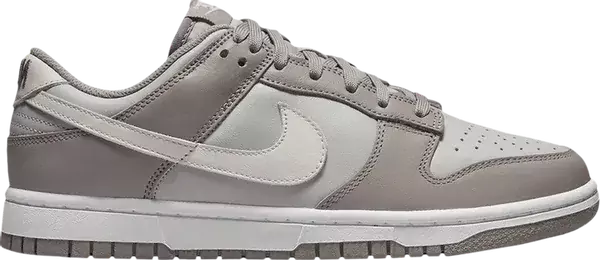

Quando surgiu o Nike Dunk?
O Nike Dunk, lançado primeiramente em 1985, foi desenhado por Peter Moore, o mesmo ex-diretor criativo da Nike que projetou o Jordan 1. O Dunk evoluiu de um tênis de basquete simples para um item de colecionador altamente valorizado, cortejado por celebridades, skatistas e amantes de tênis em todo o mundo.
O sucesso do Nike Dunk
O sucesso do Dunk é resultado de uma combinação de fatores. Primeiramente, seu design clássico e versátil, que pode ser facilmente personalizado e adaptado a diferentes estilos e tendências. Em segundo lugar, a Nike foi capaz de criar colaborações exclusivas e limitadas com celebridades, marcas, equipes de esportes e artistas, fazendo do Dunk um item de desejo para colecionadores.
Surgimento do Nike Dunk SB
A história da Nike Dunk SB acompanha a expansão do skate pelo mundo, ou seja, a linha criada em 2002, surgiu após o estilo streetwear tomar proporções que poucos imaginavam.
Neste período, outras marcas já haviam conquistado seu espaço no segmento, mas a Nike correu atrás e conseguiu se posicionar.
Com o passar dos anos, a Nike SB se consolidou e ganhou credibilidade entre profissionais e amadores de skate. Atualmente, muitos que ainda não têm um tênis ou acessório da Nike SB, sonham em ter.
